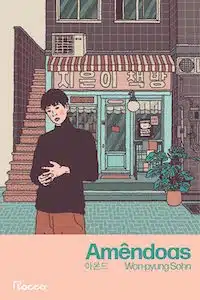

Leia. Imagine. Compartilhe.
Uma plataforma para aqueles que gostam de descobrir universos e compartilhar histórias épicas.
Procurando o que ler a seguir?
Escolha sua próxima leitura com base no que está em alta, com resenhas feitas por nossos leitores.

Amêndoas
Won-pyung Sohn
Divinos Rivais
Rebecca Ross
Uma Família Feliz
Raphael Montes
Admirável Mundo Novo
Aldous Huxley
Tres
Valérie Perrin
Uma Sombra na Brasa
Jennifer L. Armentrout
Wolfsong
TJ Klune
O Colecionador
John Fowles
Quarta Asa
Rebecca Yarros
Junte-se a melhor comunidade literária do Brasil!
Resenhas
Publique resenhas de suas leituras favoritas (ou nem tao favoritas assim)